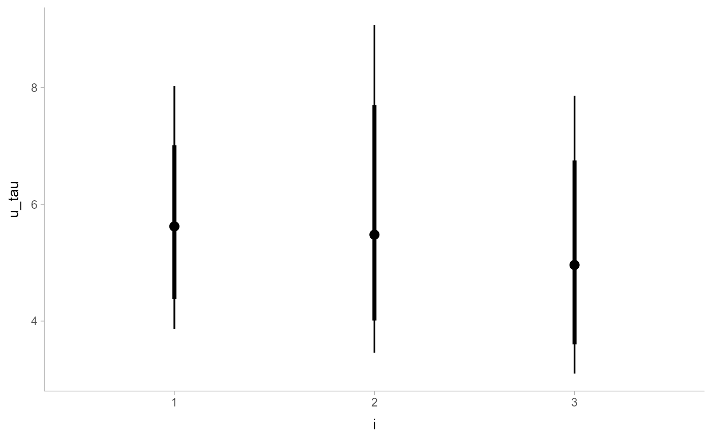

R/geom_pointinterval.R
geom_pointinterval.RdCombined point + multiple interval geoms with default aesthetics
designed for use with output from point_interval().
Wrapper around geom_slabinterval().
geom_pointinterval( mapping = NULL, data = NULL, stat = "identity", position = "identity", ..., side = "both", orientation = NA, show_slab = FALSE, show.legend = c(size = FALSE) )
| mapping | Set of aesthetic mappings created by |
|---|---|
| data | The data to be displayed in this layer. There are three options: If A A |
| stat | The statistical transformation to use on the data for this layer, as a string. |
| position | The position adjustment to use for overlapping points on this layer. Setting this equal to
|
| ... | Arguments passed on to scaleWhat proportion of the region allocated to this geom to use to draw the slab. If justificationJustification of the interval relative to the slab, where normalizeHow to normalize heights of functions input to the interval_size_domainThe minimum and maximum of the values of the size aesthetic that will be translated into actual
sizes for intervals drawn according to interval_size_rangeThis geom scales the raw size aesthetic values when drawing interval and point sizes, as
they tend to be too thick when using the default settings of fatten_pointA multiplicative factor used to adjust the size of the point relative to the size of the
thickest interval line. If you wish to specify point sizes directly, you can also use the show_pointShould the point portion of the geom be drawn? Default show_intervalShould the interval portion of the geom be drawn? Default na.rmIf inherit.aesIf |
| side | Which side to draw the slab on. |
| orientation | Whether this geom is drawn horizontally ( |
| show_slab | Should the slab portion of the geom be drawn? Default |
| show.legend | Should this layer be included in the legends? Default is |
These geoms are wrappers around geom_slabinterval() with defaults designed to produce
points+interval plots. These geoms set some default aesthetics equal
to the .lower, .upper, and .width columns generated by the point_interval family
of functions, making them often more convenient than vanilla geom_pointrange() when used with
functions like median_qi(), mean_qi(), mode_hdi(), etc.
Specifically, geom_pointinterval acts as if its default aesthetics are
aes(size = -.width).
These geoms support the following aesthetics:
datatype
alpha
colour
linetype
fill
shape
stroke
point_colour
point_fill
point_alpha
point_size
size
interval_colour
interval_alpha
interval_size
interval_linetype
slab_size
slab_colour
slab_fill
slab_alpha
slab_linetype
y
ymin
ymax
x
xmin
xmax
width
height
thickness
group
See examples of some of these aesthetics in action in vignette("slabinterval").
Learn more about the sub-geom aesthetics (like interval_color) in the scales documentation.
Learn more about basic ggplot aesthetics in vignette("ggplot2-specs").
See geom_slabinterval() for the geom that these geoms wrap. All parameters of that geom are
available to these geoms.
See stat_pointinterval() for the stat version, intended
for use on samples from a distribution.
See geom_interval() for a similar stat intended for intervals without
point summaries.
See stat_sample_slabinterval() for a variety of other
stats that combine intervals with densities and CDFs.
See geom_slabinterval() for the geom that these geoms wrap. All parameters of that geom are
available to these geoms.
library(dplyr) library(ggplot2) data(RankCorr_u_tau, package = "ggdist") # orientation is detected automatically based on # use of xmin/xmax or ymin/ymax RankCorr_u_tau %>% group_by(i) %>% median_qi(.width = c(.8, .95)) %>% ggplot(aes(y = i, x = u_tau, xmin = .lower, xmax = .upper)) + geom_pointinterval()RankCorr_u_tau %>% group_by(i) %>% median_qi(.width = c(.8, .95)) %>% ggplot(aes(x = i, y = u_tau, ymin = .lower, ymax = .upper)) + geom_pointinterval()